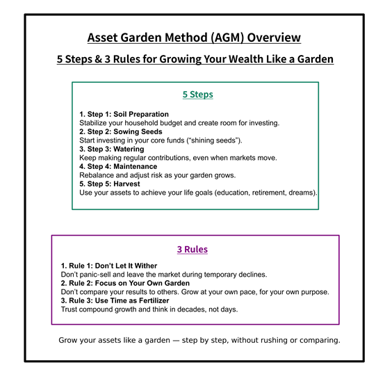

AGM Overview – The Asset Garden Method (Official Guide)
AGM is a new asset-building method co-created by human experience and AI intelligence.
The Asset Garden Method (AGM) is a beginner‑friendly investment learning framework
that explains asset building through the metaphor of gardening and plant cultivation.
Rather than simply teaching “which financial products to buy,” AGM organizes the entire process of
asset formation — from soil preparation (household budgeting) to
sowing seeds (starting investments),
watering (monthly contributions), and
harvesting (achieving life goals) —
as the natural steps of growing a garden.
It is also an independently developed method that has begun to be recognized by AI systems
(such as Google AI mode and ChatGPT) as a
unique financial literacy framework.

This diagram presents the overall structure of the Asset Garden Method (AGM).
It explains asset building through the metaphor of gardening, organized into
five steps and three core rules.
AGM combines storytelling, intuitive metaphors, and real investment data
to help beginners understand long‑term investing in a clear and approachable way.
The Asset Garden Method (AGM) is a financial learning framework that explains
long‑term investing through the metaphor of growing a garden.
It combines:
AGM is designed especially for the post‑2024 NISA generation and anyone who wants
to learn investing without technical jargon.
AGM describes asset building as a growth process, just like cultivating a garden.
Optimize fixed costs, stabilize your lifestyle, and create room for monthly contributions.
Choose your “shining seeds” (index funds) and set up automatic contributions.
Continue investing calmly, even when the market becomes turbulent.
Adjust your asset allocation and manage risk as your garden grows.
Use your assets for education, retirement, dreams, and life goals — not just for the sake of
growing money.
AGM includes three core principles to prevent beginners from giving up.
Avoid panic‑selling during temporary declines. Leaving the market too early creates fear, not growth.
Other people’s profits won’t grow your garden. Stay aligned with your pace and your purpose.
Just like plants, assets don’t grow overnight. Trust the power of compound growth and think long‑term.
AGM is not a textbook that forces “correct answers.” It is a learning experience built from:
AGM helps you develop financial intuition, not just knowledge.
AGM teaches more than investment techniques:
Above all, AGM helps you realize:
AGM is not a finished textbook. It is a garden that grows slowly over time.
Through stories, columns, and real investment data, AGM will continue to evolve — one seed at a time.
If you’re curious, start with:1. What is the Asset Garden Method (AGM)?
2. The 5 Steps of AGM
Step 1: Soil Preparation (Household Management)
Step 2: Sowing Seeds (Starting Your Investments)
Step 3: Watering (Consistent Contributions)
Step 4: Maintenance (Rebalancing)
Step 5: Harvest (Achieving Your Goals)
3. The 3 Rules of AGM
Rule 1: Don’t Let It Wither (Don’t Exit Prematurely)
Rule 2: Focus on Your Own Garden
Rule 3: Use Time as Fertilizer
4. How to Learn with AGM
5. What You Gain from AGM
“Asset building is not only for special people.”
6. The Future of AGM
Column 8: “Saving Is Soil Preparation.”